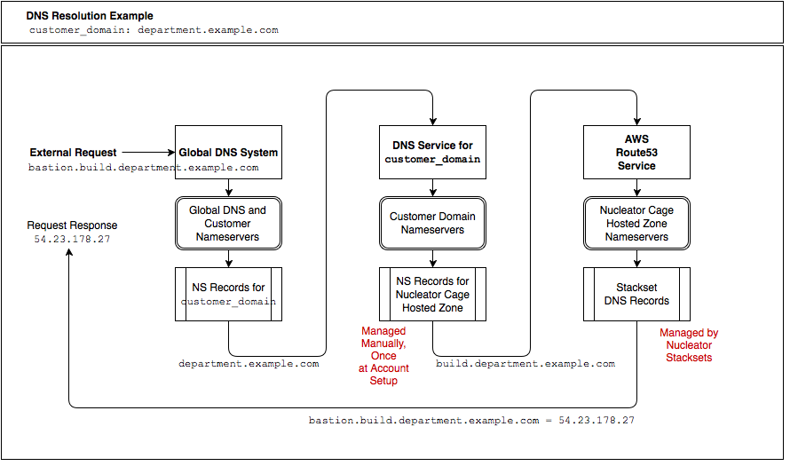

Prepare AWS Account - Set Up DNS for Cages Defined Within Your Account
Configure DNS
account setup creates Hosted Zones in AWS Route53 for each of the Cages listed in the customer configuration file (~/.nucleator/siteconfig/<customer_name>.yml) for the specified Customer. To support easy external DNS name resolution of instances that Stacksets define to be externally resolvable, the DNS nameservers for the domain that you've specified for customer_domain must delegate to the Nucleator created hosted zone(s) responsibility for name resolution for servers within each defined Nucelator Cage. Because different Customers may user different DNS services to manage their specified customer_domain, Nucleator does not attempt to automate this step. Connection of each defined Cage to DNS resolution services needs to occurs manually immediately after the account setup process, and remains available to each defined Cage as the Cage is repeatedly provisioned and destroyed. Nucleator Stacksets manage the provisioning of DNS records within the hosted zone provisioned by the Cage. In order for these records to be resolvable, manual setup of DNS to delegate from the customer_domain to each defined Cage's hosted zone is required to complete account setup.
Example DNS Resolution Path
We'll use resolution of the bastion server for a customer's build Cage as an example and assume that the customer_domain is one level below your top level domain. A typical DNS resolution path for this case is:

We will describe the process of delegating from customer_domain to each Cage's hosted zone in three scenarios:
- Customer DNS in Route 53.
customer_domainis managed in AWS Route53, most likely in an Account that is unrelated to Nucleator usage. - Customer DNS outside AWS.
customer_domainis managed using a DNS system outside of AWS. - Customer Domain from free provider. I don't own a domain where I can control NS records and would like to establish a no-cost subdomain so I can try out Nucleator.
Customer Domain is Managed in AWS Route53
If you are using AWS Route53 to manage DNS for your specified customer_domain, you just need to add an NS record to the hosted zone that is authoritative for customer_domain for each of the Cages that you've defined for the specified Customer. The NS record for each Cage should include all of the nameservers that are specified in the Hosted Zone that was created for that Cage by nucleator account setup.
After a brief delay, the hosted zone for your Cage should begin to resolve in the global DNS system. You can test this to validate that it is working:
dig +short NS <cage_name>.<customer_domain> # returns nameservers for the hosted zone created for your Cage dig +short SOA <cage_name>.<customer_domain> # returns Source of Authority for the hosted zone created for your Cage
Customer Domain is Managed Externally
Customer DNS setups can vary dramatically. While Route53 is performant and convenient, you do not need to use Route53 as the DNS Service for your specified customer_domain in order to use Nucleator. You do need to be able to add NS records for each Cage to the zone file that is authoritative for customer_domain.
After a brief delay, the hosted zone for your Cage should begin to resolve in the global DNS system. You can test this to validate that it is working using the same method as described above.
Customer Domain is Provided by a Free Subdomain Provider
To illustrate this case we will use a free hosted subdomain service from freedns.afraid.org.
The following example will create and use a free hosted subdomain from http://freedns.afraid.org to establish a subdomain that can be used as Nucleator's customer_domain. In this example we will create a subdomain at freedns.afraid.org, and a manually created hosted zone within Route53 that together will provide a resolvable customer_domain to which we can add authoritative DNS records. In this example we will use customer_domain of fredco.mooo.com, and configure DNS resolution for a defined Nucleator build Cage. If you do not own a domain where you can create NS records, this approach will also allow you to try out Nucleator without needing to purchase one.
Once complete:
- the
mooo.comname servers are delegating references tofredco.mooo.comto the nameserver within the manually created Route53 Hosted Zonefredco.mooo.com. - This nameserver in turn is delegating references to
build.fredco.mooo.comto the nameservers within thebuildCage Route53 Hosted Zonebuild.fredco.mooo.comthat were automatically created bynucleator account setup. - These nameservers, established by
nucleator account setup, will include DNS records for any externally resolvable instances provisioned within the NucleatorbuildCage, for examplebastion.build.fredco.mooo.com.